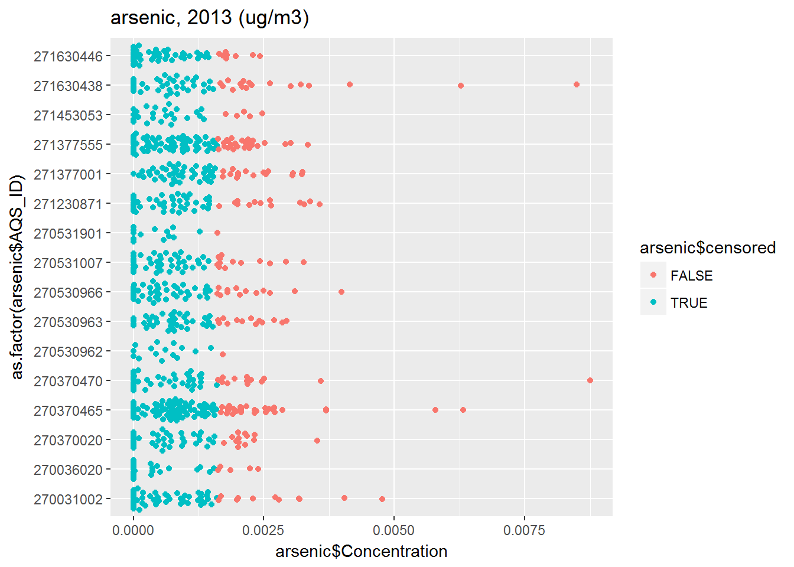
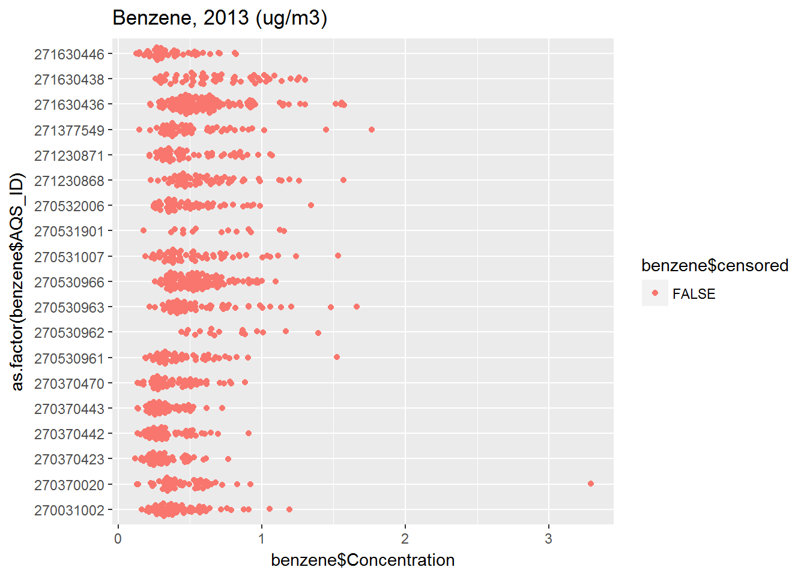

Site comparisons (Derek & Cassie)
Notes
Steps:
- Chart data with box and whisker plots. Some site differences might be very apparent and not require statistical comparisons. [Need to think about what is apparent enough for a visual test, maybe no overlap of box, or only half or less overlap] look at cenboxplot with NADA packages, or use Kristies boxplot with censored values.
- Check for normality Chi-squared test (Is normality a valid assumption?). If the data are normal, and there is equal variance [Levenes test–generic script here] complete an ANOVA to compare sites. If there are more than 2 sites, follow with a post hoc test [I say Tukey, but Derek weigh in here].
- If the data are not normal, and there is not equal variance [see generic script from above] complete a Kruskal wallis test (but there are other ones if you have < or > 50 samples…look into this). If there are more than 2 sites to compare, use Dunns test for post hoc site by site comparisons [Kristie has a script for this, will make it generic].
7.1 Confidence intervals
If data is not normal, use bootstraping to generate means for each site and take the differences of those means. If the lower bound of the 95% confidence interval for those differences is greater than zero, or the upper bound is less than zero, then the site means are significantly different. You cannot just genrate confidence intervals for the means individually and see if they overlap since the joint probability of both means being in the same region is lower than the marginal probabilities of each mean being in the region. It is not effective to do pairwise comparisons due to null data and non-detects. You cannot use an ANOVA test since the data more closely resembles a log-normal distribution than a normal distribution and for a log-normal distribution, the variance is not independent of the mean which means that transforming the data and doing an ANOVA test would bias the confidence interval for the difference.
The script below uses bootstrap sampling to generate 1000 differences in site means which are ordered to create a 95% confidence interval for the difference in means. If the lower bound of the interval is greater than zero, then the second site has a higher mean concentration than the first site. If the upper bound of the confidence interval is less than zero, then the second site has a lower mean concentration than the first site.
# Data must have names "AQSID", "POC", "Parameter", "Date", "Result", "MDL", "Pollutant"
library(dplyr)
library(EnvStats)
library(lubridate)
data = read.csv('https://raw.githubusercontent.com/MPCA-air/air-methods/master/airtoxics_data_2009_2013.csv', stringsAsFactors = F)
seed = 2017
names(data)[1:10] <- c("AQSID", "POC", "Parameter", "Date","Result",
"Null_Data_Code", "MDL", "Pollutant", "Year", "CAS")
data = data %>% filter(AQSID %in% c(270370020, 270370470, 271230871) ) %>% mutate(`Monitoring Site` = AQSID, PollutantGroup = Pollutant, Censored = Result < MDL, Result = ifelse(Censored, MDL, Result) )
site_number = 271230871
site_compare = function(data, site_number, Boot_Repeats = 1000) {
annual_AT_means = function(air_toxics) {
air_toxics = mutate(air_toxics, Year = year(ymd(Date)), Quarter = quarter(ymd(Date)) )
sample_complete = air_toxics %>% group_by(`Monitoring Site`, AQSID, Pollutant, PollutantGroup, Year, Quarter, MDL) %>% summarise(Complete = ( (sum(!is.na(Result) ) / length(Result) ) >= 0.75 ) ) %>%
mutate(Complete = ifelse(is.na(Complete), F, Complete) ) %>% group_by(`Monitoring Site`, AQSID, Pollutant, PollutantGroup, Year, MDL) %>% summarise(Complete = all(Complete) )
enough_detects = air_toxics %>% group_by(`Monitoring Site`, AQSID, Pollutant, PollutantGroup, Year, MDL) %>% summarise(Detected = mean(Censored, na.rm = T) <= 0.8 )
site_means = air_toxics %>% group_by(`Monitoring Site`, AQSID, Pollutant, PollutantGroup, Year, MDL) %>% summarise(Mean = ifelse(length(unique(Result[!is.na(Result) & !Censored] ) ) < 2, NA,
ifelse (any(Censored, na.rm = T), elnormAltCensored(Result, Censored, method = "impute.w.mle", ci = F)$parameters[[1]], mean(Result, na.rm = T) ) ) )
site_means = left_join(site_means, sample_complete, by = c("Monitoring Site", "AQSID", "Pollutant", "PollutantGroup", "Year", "MDL") ) %>%
left_join(enough_detects, by = c("Monitoring Site", "AQSID", "Pollutant", "PollutantGroup", "Year", "MDL") ) %>% mutate(Mean = ifelse(Complete & Detected, Mean, NA), ID = paste(AQSID, Pollutant, Year) )
return(site_means)
}
MLE_est <- function(data){
results = data$Result
censored = data$Censored
n = sum(!is.na(results))
if (length(unique(results[!is.na(results) & !censored] ) ) < 2 ) {
MLE_means = NA
}
else {
random.rows = NULL
random.rows = sample(which(!is.na(censored) & (!censored) & !duplicated(results) ), 2, replace = FALSE)
random.rows = c(random.rows, sample(which(!is.na(censored)), n-2, replace = TRUE))
MLE_means = ifelse(sum(censored[random.rows], na.rm = T) == 0, mean(results[random.rows]), elnormAltCensored(results[random.rows], censored[random.rows], method = "impute.w.mle", ci = F)$parameters[[1]] )
}
return(MLE_means)
}
data = mutate(data, ID = paste(AQSID, Pollutant, Year))
Bootstrap_means = replicate(Boot_Repeats, (by(data, data$ID, MLE_est) ) )
Bootstrap_means = rownames_to_column(as.data.frame(Bootstrap_means), "ID" )
Bootstrap_means = right_join(annual_AT_means(data), Bootstrap_means, by = "ID")
Bootstrap_means = Bootstrap_means %>% group_by(Pollutant, Year) %>% arrange(desc(AQSID == site_number), .by_group = T ) %>%
group_by(Pollutant, Year) %>% mutate_at(vars(num_range("V", 1:Boot_Repeats)), funs(c(first(.), (. - first(.))[-1])) ) %>% ungroup()
LB = select(Bootstrap_means, num_range("V", 1:Boot_Repeats) ) %>% apply(1, function(x) sort(-x)[floor(0.025 * Boot_Repeats)] )
UB = select(Bootstrap_means, num_range("V", 1:Boot_Repeats) ) %>% apply(1, function(x) sort(-x)[ceiling(0.975 * Boot_Repeats)] )
CI = data.frame(Lower = LB, Upper = UB)
CI = bind_cols(CI, Bootstrap_means) %>% select(Lower:ID) %>% mutate(Lower = ifelse(any(AQSID == site_number & Complete & Detected) & AQSID != site_number & Complete & Detected, Lower, NA),
Upper = ifelse(any(AQSID == site_number & Complete & Detected) & AQSID != site_number & Complete & Detected, Upper, NA),
Comparison = ifelse(Lower > 0, "Higher", ifelse(Upper < 0, "Lower", "Same") ) )
return(CI)
}
set.seed(seed)
compare = site_compare(data, site_number, 50) #minimum 50 repeats7.2 Tools to visualize data
Beeswarm
# Data must have names"AQS_ID", "POC", "Param_Code", "Date", "Concentration", "Null_Data_Code", "MDL", "Pollutant", "Year", "CAS"
# Data must also have column named "Censored" indicating whether Concentration < MDL
# Data must also have column "ID" with grouping criteria. ID = Pollutant if only grouping by pollutant, ID = Pollutant + Year if grouping by pollutant & year, ID = Pollutant + Site ID if comparing the same site across multiple years. See example below. Other options for ID are also acceptable depending on type of analysis.
library(ggbeeswarm)## Warning: package 'ggbeeswarm' was built under R version 3.4.2data = read.csv('https://raw.githubusercontent.com/MPCA-air/air-methods/master/airtoxics_data_2009_2013.csv', stringsAsFactors = F)
names(data)[1:10] <- c("AQS_ID", "POC", "Param_Code", "Date","Concentration",
"Null_Data_Code", "MDL", "Pollutant", "Year", "CAS")
data$censored = ifelse(data$Concentration<data$MDL, T, F)
lead = subset(data,data$Param_Code == 14129 & data$Year==2013)
ggplot2::ggplot(lead, aes(y = as.factor(lead$AQS_ID), x = lead$Concentration, color = lead$censored)) + geom_quasirandom(aes(), groupOnX=F) + ggtitle("Lead, 2013 (ug/m3)")## Warning: Removed 31 rows containing missing values (position_quasirandom).
arsenic = subset(data,data$Param_Code == 12103 & data$Year == 2013)
ggplot2::ggplot(arsenic, aes(y = as.factor(arsenic$AQS_ID), x = arsenic$Concentration, color = arsenic$censored)) + geom_quasirandom(aes(), groupOnX=F) +ggtitle("arsenic, 2013 (ug/m3)")## Warning: Removed 31 rows containing missing values (position_quasirandom).
benzene = subset(data,data$Param_Code == 45201 & data$Year == 2013)
ggplot2::ggplot(benzene,aes(y = as.factor(benzene$AQS_ID),x=benzene$Concentration,color = benzene$censored)) + geom_quasirandom(aes(),groupOnX = F,varwidth = TRUE) + ggtitle("Benzene, 2013 (ug/m3)")## Warning: Removed 33 rows containing missing values (position_quasirandom).
References
Visualizing uncertainty in housing data
R packages: Beeswarm